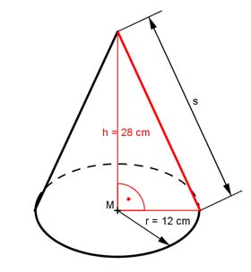

Aufgabe 186 Ein Kegel hat eine Höhe h von 28 cm und einen Grundkreisradius r von 12 cm. Wie groß ist seine Oberfläche O?

Satz von Pythagoras im roten Dreieck: s2 = h2 + 122 cm2 s2 = 282 cm2 + 122 cm2 s2 = 784 cm2 + 144 cm2 = 928 cm2 |√ s = 30,5 cm Oberfläche O = Grundfläche G + Mantelfläche M O = G + M O = л * r2 + л * r * s O = л * 122 cm2 + л * 12 cm * 30,5 cm O = 452,16 cm2 + 1 149,24 cm2 = 1 601,4 cm2